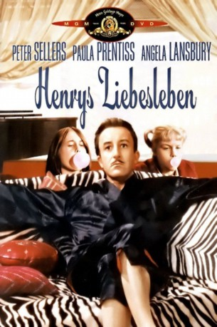

#7605 Henrys Liebesleben
Alternativ: The World of Henry Orient
 
 IMDB-Wertung: 6.8 / 10
IMDB-Wertung: 6.8 / 10  Metascore: 0
Metascore: 0 
Die Teenager Valerie (Tippy Walker) und Marian (Merrie Spaeth) machen sich aus Langeweile an den Pianisten Henry Orient (Peter Sellers) heran. Ihre Fantasien vertrauen sie ihren Tagebüchern an. Keine gute Idee, denn Valeries Mutter (Angela Lansbury) ist sehr neugierig. - Sensible und charmante Unterhaltung mit Komiker-Ass Peter Sellers.
Jahr: 1964
Dauer: 102 Minuten
FSK: 16
Land: USA Studio: United ArtistsTonspuren: DD5.1 - ,
Untertitel:
Auflösung: 1080p (1920x1080) Größe: 7208 MB
Genre: Drama, Komödie
Regisseur: George Roy Hill
Drehbuch: Nora Johnson
Soundtrack:
Darsteller:
 Peter Sellers als Henry Orient
Peter Sellers als Henry Orient- Paula Prentiss als Stella Dunnworthy
 Angela Lansbury als Isabel Boyd
Angela Lansbury als Isabel Boyd Tom Bosley als Frank Boyd
Tom Bosley als Frank Boyd- Phyllis Thaxter als Mrs. Avis Gilbert
- Merrie Spaeth als Marian Gilbert
 John Fiedler als Sidney
John Fiedler als Sidney- Al Lewis als Store Owner
- Fred Stewart als Doctor
- Claudia Morgan als Drunk Woman at Christmas Party
- Hermione Gingold als (scenes deleted
- Bibi Osterwald als Erica Booth
- Tippy Walker als Valarie Campbell Boyd
- Peter Duchin als Joe Daniels
- Philippa Bevans als Emma Hambler
- Jerry Jarrett als
- Jane Buchanan als Lillian Kafritz
- Peter Turgeon als Orchestra Member
- William Hinnant als
- Colin Romoff als
- William LeMassena als
- William J. Daprato als Waiter , uncredited
- Timothy Gordon als Man Holding Towel Before Concert , uncredited
Datei: X:\1964\Henrys Liebesleben (1964, FSK16, 1920x1080).mkv seit 23.11.2017
Festplatte: HD 1900-1970
 Es gibt insgesamt 22 Filme in der Gruppe '1964'
Es gibt insgesamt 22 Filme in der Gruppe '1964'